화공기사(구) (2017-05-07 기출문제)
1과목: 화공열역학
1. 화학 평형상태에서 CO, CO2, H2, H2O 및 CH4로 구성되는 기상계에서 자유도는?
- 3
- 4
- 5
- 6
(정답률: 49%)

2. 다음 중 이상기체에 대한 특성식과 관련이 없는 것은? (단, Z: 압축인자, CP:정압비열, Cv: 정적비열, U: 내부에너지, R: 기체상수, P: 압력, V: 부피, T: 절대온도, n: 몰 수)
- Z = 1
- CP+Cv = R
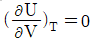
- PV = nRT
(정답률: 78%)
3. 다음 열역학 관계식 중 옳지 않은 것은?
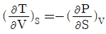
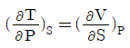
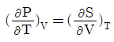
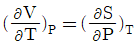
(정답률: 72%)
4. 주울-톰슨(Joule-Thomson)팽창과 엔트로피와의 관계를 옳게 설명한 것은?
- 엔트로피와 관련이 없다.
- 엔트로피가 일정해진다.
- 엔트로피가 감소한다.
- 엔트로피가 증가한다.
(정답률: 54%)
5. “액체혼합물 중의 한 성분이 나타내는 증기압은 그 온도에 있어서 그 성분이 단독으로 조재할 때의 증기압에 그 성분의 몰분율을 곱한 값과 같다.” 이것은 누구의 법칙인가?
- 라울(Raoult)의 법칙
- 헨리(Henry)의 법칙
- 픽(Fick)의 법칙
- 푸리에(Fourier)의 법칙
(정답률: 81%)
6. 27℃, 800atm 하에서 산소 1 mol 부피는 몇 L인가? (단, 이 때 압축계수는 1.5 이다.)
- 0.46L
- 0.72L
- 0.046L
- 0.072L
(정답률: 80%)
7. 어느 물질의 등압 부피팽창계수와 등온부피압축계수를 나타내는 β와 k가 각각 β=a/V 와 k=b/V로 표시될 때 이 물질에 대한 상태방정식으로 적합한 것은?
- V = aT +bP + 상수
- V = aT - bP + 상수
- V = -aT + bP + 상수
- V = -aT - bP + 상수
(정답률: 77%)
8. 다음 그림은 1기압하에서의 A, B 2성분계 용액에 대한 비점선도(Boiling point diagram)이다. XA=0.40 인 용액을 1기압 하에서 서서히 가열할 때 일어나는 현상을 설명한 내용으로 틀린 것은? (단, 처음 온도는 40℃이고, 마지막 온도는 70℃이다.)
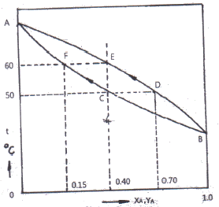
- 용액은 50℃에서 끓기 시작하여 60℃가 되는 순간 완전히 기화한다.
- 용액이 끓기 시작하자마자 생긱 최초의 증기조성은 YA=0.70 이다.
- 용액이 계속 증발함에 따라 남아있는 용액의 조성은 곡선 DE를 따라 변한다.
- 마지막 남은 한방울의 조성은 XA=0.15 이다.
(정답률: 73%)
9. 다음 중 역행응축(retrograde condensation)현상을 가장 유용하게 쓸 수 있는 경우는?
- 기체를 임계점에서 응축시켜 순수성분을 분리시킨다.
- 천연가스 채굴 시 동력 없이 액화천연가스를 얻는다.
- 고체 혼합물을 기체화시킨 후 다시 응축시켜 비휘발성 물질만을 얻는다.
- 냉동의 효율을 높이고 냉동제의 증발잠열을 최대로 이용한다.
(정답률: 76%)
10. 어떤 기체가 주울-톰슨 전환점(Joule-Thomson inversion point)이 될 수 있는 조건은? (단,
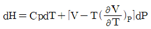
이다.)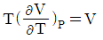
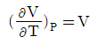
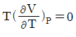
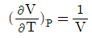
(정답률: 65%)
11. 다음 중 루이스-랜덜 규칙(Lewis-Randallrule)의 옳은 표현은? (단, 실제 용액에 적용할 수 있는식,
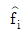
: 용액중 I성분의 퓨개시티(Fugacity), fi: 순수성분 I의 퓨개시티,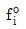
: 표준상태에서 순수성분i의 퓨개시티, xi: 성분 I의 액상 몰분률이다.)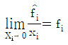
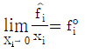
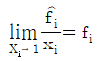
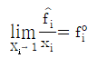
(정답률: 56%)
12. 1 mol의 이상기체의 처음상태 50℃, 10kPa에서 20℃, 1kPa로 팽창했을 때의 엔트로피(S)의 변화는? (단,
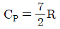
이다.)- -2.6435R
- 2.6435R
- -1.9616R
- 1.9616R
(정답률: 47%)
13. 물과 수증기와 얼음이 공존하는 삼중점에서 자유도의 수는?
- 0
- 1
- 2
- 3
(정답률: 83%)
14. 질량 1500kg의 승용차가 40km/h의 속도로 달린다. 이 승용차의 운동에너지는 몇 Nㆍm인가?
- 1.20×106
- 9.26×105
- 1.20×105
- 9.26×104
(정답률: 62%)
15. 평형(equilibrium)에 대한 정의가 아닌 것은? (단, G는 깁스(Gibbs)에너지, mix는 혼합에 의한 변화를 의미한다.)
- 계(system)내의 거시적 성질들이 시간에 따라 변하지 않는 경우
- 정반응의 속도와 역반응의 속도가 동일할 경우
- △GT,P=0
- △Vmix=0
(정답률: 78%)
16. 벤젠(1)-톨루엔(2)의 기-액 평형에서 라울의 법칙이 만족된다면 90℃, 1atm에서 기체의 조성 y1은 얼마인가? (단, psat1=1.5atm, Psat2=0.5atm이다.)
- 1/3
- 1/4
- 1/2
- 3/4
(정답률: 66%)
17. 압축인자 Z=+BP/RT일 때 퓨개시티계수 ø는?
- ø = BP/RT
- ln ø = BP/RT
- ø = B
- ln ø = B
(정답률: 67%)
18. 열역학 기초에 관한 내용으로 옳은 것은?
- 이상기체의 엔탈피는 온도만의 함수이다.
- 이상기체의 엔트로피는 온도만의 함수이다.
- 일은 항상 ∫PdV의 적분으로 구한다.
- 열역학 제1법칙은 계의 총에너지가 그 계의 내부에서 항상 보존된다는 것을 뜻한다.
(정답률: 69%)
19. 성분 A와 B가 섞여있는 2성분혼합물이 서로 화학반응이 일어나지 않으며, 기-액 평형에서 라울의 법칙에 잘 따른다고 한다. 온도 T와 압력 P에서 A와 B의증기압이 각각 P0A, P0B라 할 때, 액체와 평형상태에 있는 기체혼합물 중 성분 A의 조성 yA
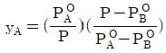
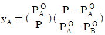
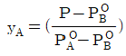
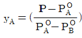
(정답률: 64%)
20. 기상 반응계에서 평형상수 K가 다음과 같이 표시되는 경우는? (단, vi는 성분 I 의 양론계수이고
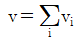
이다.)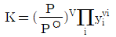
- 평형혼합물이 이상기체이다.
- 평형혼합물이 이상용액이다.
- 반응에 따른 몰수 변화가 없다.
- 반응열이 온도에 관계없이 일정하다.
(정답률: 78%)
2과목: 단위조작 및 화학공업양론
21. 어떤 장치의 압력계가 게이지압 26.7mmHg의 진공을 나타내었고 이 때의 대기압은 745mmHg였다. 이 장치의 절대압은 몇 mmHg인가?
- 26.7
- 718.3
- 771.7
- 733.3
(정답률: 60%)
22. 액체염소 40kg이 표준상태에서 증발했을 때 약 몇 m3의 CI2가스가 생성되는가? (단, CI2의 분자량은 70.9이다.)
- 10.6
- 12.6
- 10600
- 12600
(정답률: 68%)
23. 전압 750mmhg, 수증기분압 40mmHg일 때 절대습도는 몇 kg H2O/kg dry air인가?
- 35
- 3.5
- 0.35
- 0.035
(정답률: 67%)
24. 162g의 C, 22g의 H2 의 혼합연료를 연소하여 CO2 11.1vol%, CO 2.4vol%, O2 4.1vol%, N2 82.4vol% 조성의 연소가스를 얻었다. 과잉공기%는 약 얼마인가?
- 17.3
- 20.3
- 15.3
- 25.3
(정답률: 28%)
25. 200g의 CaCl2가 다음의 반응식과 같이 공기중의 수증기를 흡수할 경우에 발생하는 열은 약 몇 kcal인가? (단, CaCl2의 분자량은 111이다.)
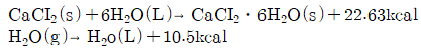
- 164
- 154
- 60
- 41
(정답률: 54%)
26. 25℃, 760mmHg에서 10000m3용기에 공기가 차 있을 때 산소가 차지하는 분용(partialvolume)은 몇 m3인가?
- 2100
- 2240
- 2290
- 2450
(정답률: 66%)
27. 18℃, 1atm에서 H2O(L)의 생성열은 -68.4kcal/mol이다. 18℃, 1atm에서, 다음 반응의 반응열이 42kcal/mol 이다. 이를 이용하여 18℃, 1atm에서의 CO(g) 생성열을 구하면 몇 kcal/mol인가?
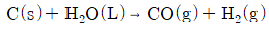
- +110.4
- +26.4
- -26.4
- -110.4
(정답률: 63%)
28. 질소에 아세톤이 14.8vol% 포함되어 있다. 20℃, 745mmHg에서 이 혼합물의 상대포화도는 약 몇 %인가? (단, 20℃에서 아세톤의 포화증기압은 184.8mmHg이다.)
- 73
- 60
- 53
- 40
(정답률: 61%)
29. 펄프를 건조기 속에 넣어 수분을 증발시키는 공정이 있다. 이 때 펄프가 75wt%의 수분을 포함하고, 건조기에서 100kg의 수분을 증발시켜 수분 25wt%펄프가 되었다면 원래의 펄프의 무게는 몇 kg인가?
- 125
- 150
- 175
- 200
(정답률: 64%)
30. 3atm의 압력과 가장 가까운 값을 나타내는 것은?
- 309.9 kgf/cm2
- 441 psi
- 22.8 cmHg
- 30.3975 N/cm2
(정답률: 54%)
31. U자관 마노미터를 오리피스(Orifice)유량계에 설치했다. 마노미터에는 수은(비중:13.6)이 들어있고 수은 상부는 사염화탄소(비중: 1.6)로 차있다. 마노미터가 21cm를 가리킬 때 물기둥 높이(cm)로 환산하면 약 얼마인가?
- 124
- 142
- 196
- 252
(정답률: 54%)
32. 두 물체가 열적 평형에 있을 때 전체 복사강도(w1, w2)와 흡수율(a1, a2)의 관계는?
- w1×w2×a1×a2=1
- a1×w2=a2×w1
- a1×w1=a2×w2
- w1×w2=a1×a2
(정답률: 63%)
33. 어떤 증류탑의 환류비가 2이고 환류량이 400kmol/h이다. 이 증류탑 상부에서 나오는 증기의 몰(mol) 잠열이 7800kcal/kmol이며 전축기로 들어가는 냉각수는 20℃에서 156000kg/h이다. 이 냉각수의 출구온도는?
- 30℃
- 40℃
- 50℃
- 60℃
(정답률: 25%)
34. 일정한 압력 손실에서 유로의 면적변화로부터 유량을 알 수 있게 한 장치는?
- 피톳 튜브(Pitot tube)
- 로타 미터(Rota meter)
- 오리피스 미터(Orifice meter)
- 벤튜리 미터(Venturi meter)
(정답률: 54%)
35. 건조 특성 곡선에서 항율건조 기간에서 감율건조 기간으로 변하는 점을 무엇이라고 하는가?
- 자유(free) 함수율
- 평형(equilibrium)함수율
- 수축(shrink) 함수율
- 한계(critical) 함수율
(정답률: 71%)
36. 혼합조작에서 혼합 초기, 혼합 도중, 완전이상혼합 시 각 균일도 지수의 값을 옳게 나타낸 것은? (단, 균일도 지수는 σ/σ0이며, σ는 혼합 도중의 표준편차, σ0는 혼합 전의 최초의 표준편차이다.)
- 혼합 초기 : 0, 혼합 도중 : 0에서 1 사이의 값, 완전이상혼합 : 1
- 혼합 초기 : 1, 혼합 도중 : 0에서 1 사이의 값, 완전이상혼합 : 0
- 혼합 초기와 혼합 도중 : 0에서 1 사이의 값, 완전이상혼합 : 1
- 혼합 초기 : 1, 혼합 도중 : 0, 완전이상혼합 : 1
(정답률: 48%)
37. 추출조작시 추제(solvent)의 선택도에 대한 설명으로 옳지 않은 것은?
- 선택도는 추질과 원용매의 분배계수로부터 구한다.
- 선택도가 1.0인 경우 분리효과를 최대로 얻을 수 있다.
- 선택도가 클수록 분리효과가 작아진다.
- 선택도가 클수록 보다 적은 양의 추제가 사용된다.
(정답률: 60%)
38. 직경이 15cm인 파이프에 비중이 0.7인 디젤유가 280ton/h 의 유량으로 이송되고 있다. 1509m의 배관 거리를 통과하는데 걸리는 시간은 약 몇 분인가?
- 1
- 2
- 3
- 4
(정답률: 50%)
39. 증발관의 능력을 크게 하기 위한 방법으로 적합하지 않은 것은?
- 액의 속도를 빠르게 해준다.
- 증발관을 열전도도가 큰 금속으로 만든다.
- 장치내의 압력을 낮춘다.
- 증기측 격막계수를 감소시킨다.
(정답률: 48%)
40. 충전탑에서 기체의 속도가 매우 커서 액이 거의 흐르지 않고, 넘치는 현상을 무엇이라고 하는가?
- 편류(Channeling)
- 범람(Flooding)
- 공동화(Cavitation)
- 비밀동반(Entrainment)
(정답률: 74%)
3과목: 공정제어
41. 다음 블록선도에서 전달함수 G(s)=C(s)/R(s)를 옳게 구한 것은?
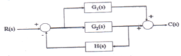
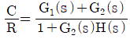
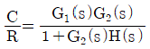
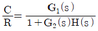
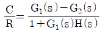
(정답률: 69%)
42. 특성방정식이 10s3+17s2+8s+1+KC=0와 같을 때 시스템의 한계이득(ultimate gain, Kcu)과 한계주기(ultimate period, Tu)를 구하면?
- Kcu = 12.6, Tu=7.0248
- Kcu = 12.6, Tu=0.8944
- Kcu = 13.6, Tu=7.0248
- Kcu = 13.6, Tu=0.8944
(정답률: 44%)
43. X1에서 X2로의 전달함수와 X2에서 X3로의 전달함수가 각각 다음과 같이 표현될 때 X1에서 X3로의 전달함수는?
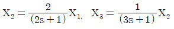
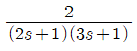
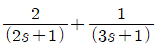
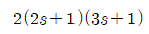
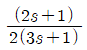
(정답률: 76%)
44. 그림과 같은 지연시간 a인 단위 계단함수의 Laplace 변환식은?
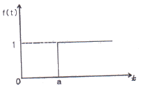
- 1/s
- a/s
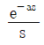
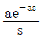
(정답률: 76%)
45. 다음 중 안정한 공정을 보여주는 폐루프 특성방정식은?
- s4+5s3+s +1
- s3+6s2+11s +10
- 3s3+5s2+s - 1
- s3+16s2+5s +170
(정답률: 61%)
46. 다음 그림에서 피드백 제어계의 총괄 전달함수는?
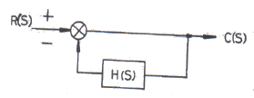
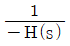
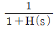
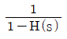
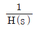
(정답률: 75%)
47. 제어계(control system)의 구성요소로 가장 거리가 먼 것은?
- 전송부
- 기획부
- 검출부
- 조절부
(정답률: 62%)
48. PD 제어기에 다음과 같은 입력신호가 들어올 경우, 제어기 출력 형태는? (단, Kc는 1이고 τD는 1이다.)
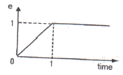
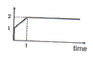
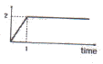
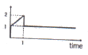
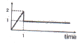
(정답률: 60%)
49. 전달함수가
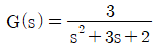
와 같은 2차계의 단위계단(unit step)응답은?(정답률: 59%)
50. 를 근사화 했을 때의 근사적 전달함수로 가장 거리가 먼 것은?
(정답률: 33%)
51. 증류탑의 일반적인 제어에서 공정출력(피제어)변수에 해당하지 않는 것은?
- 탑정생산물 조성
- 증류탑의 압력
- 공급물 조성
- 탑저 액위
(정답률: 54%)
52. 제어계의 응답 중 편차(offset)의 의미를 가장 옳게 설명한 것은?
- 정상상태에서 제어기 입력과 출력의 차
- 정상상태에서 공정 입력과 출력의 차
- 정상상태에서 제어기 입력과 공정 출력의 차
- 정상상태에서 피제어 변수의 희망값과 실제 값의 차
(정답률: 57%)
53. 1차계의 시간상수 τ에 대한 설명으로 틀린 것은?
- 계의 저항과 용량(capacitance)과의 곱과 같다.
- 입력이 계단함수일 때 응답이 최종변화치의 95%에 도달하는데 걸리는 시간과 같다.
- 시간상수가 큰 계일수록 출력함수의 응답이 느리다.
- 시간의 단위를 갖는다.
(정답률: 72%)
54. 공정 을 위하여 PI제어기 를 설치하였다. 이 폐루프가 안정성을 유지하는 불감시간(dead time) θ의 범위는?
- 0≤θ＜0.314
- 0≤θ＜3.14
- 0≤θ＜0.141
- 0≤θ＜1.41
(정답률: 30%)
55. 어떤 계의 단위계단 응답이 다음과 같을 경우 이 계의 단위충격응답(impulse response)은?
(정답률: 59%)
56. 비례폭(proportional band)이 0에 가까운 값을 갖는 제어기는?
- PI controller
- PD controller
- PID controller
- on - off controller
(정답률: 64%)
57. 자동차를 운전하는 것을 제어시스템의 가동으로 간주할 때 도로의 차선을 유지하며 자동차가 주행하는 경우 자동차의 핸들은 제어시스템을 구성하는 요소 중 어디에 해당하는가?
- 감지기
- 조작변수
- 구동기
- 피제어변수
(정답률: 63%)
58. PID 제어기 조율과 관련한 설명으로 옳은 것은?
- Offset을 제거하기 위해서는 적분동작을 넣어야 한다.
- 빠른 공정일수록 ㅁ미분동작을 위주로 제어하도록 조율한다.
- 측정잡음이 큰 공정일수록 미분동작을 위주로 제어하도록 조율한다.
- 공정의 동특성 빠르기는 조율시 고려사항이 아니다.
(정답률: 65%)
59. 인 2차계 공정에서 단위계단 입력에 대한 공정응답으로 옳은 것은?(단, ζ, r＞0 이다.)
- ζ가 1보다 작을수록 overshoot이 작다.
- ζ가 1보다 작을수록 진동주기가 작다.
- 진동주기는 K와 r에는 무관하다.
- K가 클수록 응답이 빨라진다.
(정답률: 37%)
60. 다음의 전달함수를 역변환하면 어떻게 되는가?
(정답률: 64%)
4과목: 공업화학
61. 암모니아소다법에서 암모니아함수가 갖는 조성을 옳게 나타낸 것은?
- 전염소 90g/L, 암모니아 160g/L
- 전염소 240g/L, 암모니아 45g/L
- 전염소 40g/L, 암모니아 240g/L
- 전염소 160g/L, 암모니아 90g/L
(정답률: 47%)
62. 공업적으로 수소를 제조하는 방법이 아닌 것은?
- 수성가스법
- 수증기개질법
- 부분산화법
- 공기액화분리법
(정답률: 51%)
63. 벤젠이 Ni촉매하에서 수소화 반응을 하였을 때 생성되는 것은?
- 시클로헥산
- 벤즈알데히드
- BHC
- 디히드로벤젠
(정답률: 57%)
64. 다음은 석유정제공업에서의 전화법에 대한 설명이다. 어떤 공정에 대한 설명인가?
- 접촉분해법
- 열분해법
- 수소화분해법
- 이성화법
(정답률: 67%)
65. 시리콘 진성반도체의 전도대(conduction band)에 존재하는 전자수가 6.8×1012/m3이며, 전자의 이동도(mobility)는 0.19m2/Vㆍs, 가전자대(valence band)에 존재하는 정공(hole)의 이동도는 0.0425m2/Vㆍs일 때 전기전도도는 얼마인가? (단, 전자의 전하량은 1.6×10-19Coulomb이다.)
- 2.06×10-7 ohm-1m-1
- 2.53×10-7 ohm-1m-1
- 2.89×10-7 ohm-1m-1
- 1.09×10-6 ohm-1m-1
(정답률: 40%)
66. 건식법에 의한 인산제조공정에 대한 설명 중 옳은 것은?
- 인의 농도가 낮은 인광석을 원료로 사용할 수 있다.
- 고순도의 인산은 제조할 수 없다.
- 전기로에서는 인의 기화와 산화가 동시에 일어난다.
- 대표적인 건식법은 이수석고법이다.
(정답률: 60%)
67. 석유 중에 황화합물이 다량 들어 있을 때 발생되는 문제점으로 볼 수 없는 것은?
- 장치 부식
- 환원 작용
- 공해 유발
- 악취 발생
(정답률: 73%)
68. 격막식 전해조에서 전해액은 양극에 도입되어 격막을 통해 음극으로 흐르고, 음극실의 OH이온이 역류한다. 이 때 격막실 전해조 양극의 재료는?
- 철망
- Ni
- Hg
- 흑연
(정답률: 75%)
69. 인산비료에서 유효인산 또는 가용성 인산이란?
- 수용성 인산만이 비효를 갖는 것
- 구용성 인산만이 비효를 갖는 것
- 불용성 인산만이 비효를 갖는 것
- 수용성 인산과 구용성 인산이 비효를 갖는 것
(정답률: 55%)
70. 톨루엔의 중간체로 폴리우레탄 제조에 사용되는 TDI의 구조식은?
(정답률: 57%)
71. 접촉식 황산제조 공정에서 전화기에 대한 설명 중 옳은 것은?
- 전화기 조작에서 온도조절이 좋지 않아서 온도가 지나치게 상승하면 전화율이 감소하므로 이에 대한 조절이 중요하다.
- 전화기는 SO3생성열을 제거시키며 동시에 미반응 가스를 냉각시킨다.
- 촉매의 온도는 200℃ 이하로 운전하는 것이 좋기 때문에 열 교환기의 용량을 증대시킬 필요가 있다.
- 전화기의 열교환방식은 최근에는 거의 내부 열교환방식을 채택하고 있다.
(정답률: 57%)
72. 고분자에서 열가소성과 열경화성의 일반적인 특징을 옳게 설명된 것은?
- 열가소성 수지는 유기용매에 녹지 않는다.
- 열가소성 수지는 분자량이 커지면 용해도가 감소한다.
- 열경화성 수지는 열에 잘 견디지 못한다.
- 열경화성 수지는 가열하면 경화하다가 더욱 가열하면 연화한다.
(정답률: 53%)
73. 술(에탄올)을 마시고 나서 숙취의 원인이 되는 물질은?
- 아세탈
- 아세틸코린
- 아세딜에텔
- 아세트알데히드
(정답률: 79%)
74. 염화비닐은 아세틸렌에 다음 중 어느 것을 작용시키면 생성되는가?
- NaCI
- KCI
- HCI
- HOCI
(정답률: 75%)
75. 연실법 황산제조 공정 중 glover탑에서 질소산화물 공급에 HNO3를 사용할 경우, 36wt%의 HNO3 20kg으로 약 몇 kg의 NO를 발생시킬 수 있는가?
- 0.8
- 1.7
- 2.2
- 3.4
(정답률: 57%)
76. Fischer 에스테르화 반응에 대한 설명으로 틀린 것은?
- 염기성 촉매 하에서의 카르복시산과 알코올의 반응을 의미한다.
- 가역반응이다.
- 알코올이나 카르복시산을 과량 사용하여 에스테르의 생성을 촉진할 수 있다.
- 반응물로부터 물을 제거하여 에스테르의 생성을 촉진할 수 있다.
(정답률: 36%)
77. NaOH 제조 공정 중 식염수용액의 전해 공정 종류가 아닌 것은?
- 격막법
- 증발법
- 수은법
- 이온교환막법
(정답률: 56%)
78. 부타디엔에 무수말레이산을 부가하여 환상화합물을 얻는 반응은?
- Diels-Alder 반응
- Wolff-Kishner 반응
- Gattermann-Koch 반응
- Fridel-Craft 반응
(정답률: 50%)
79. 다니엘 전지의 (-) 극에서 일어나느 반응은?
- CO+CO2-3→2CO2+2e-
- Zn→Zn2++2e-
- Cu2++2e-→Cu
- H2→2H++2e-
(정답률: 57%)
80. 염화수소 가스의 직접 합성 시 화학반응식이 다음과 같을 때 표준상태 기준으로 200L의 수소가스를 연소시키면 발생되는 열량은 약 몇 kcal 인가?
- 365
- 394
- 407
- 603
(정답률: 66%)
5과목: 반응공학
81. 화학 반응의 온도의존성을 설명하는 이론 중 관계가 가장 먼 것은?
- 아레니우스(Arrhernius)법칙
- 전이상태이론
- 분자 충돌 이론
- 볼츠만(Boltzmann)법칙
(정답률: 53%)
82. 정용 회분식 반응기에서 단분자형 0차 비가역 반응에서의 반응이 지속되는 시간t의 범위는? (단, CA0는 A성분의 초기농도, k는 속도상수를 나타낸다.)
(정답률: 72%)
83. 불균일 촉매반응에서 확산이 반응율속 영역에 있는지를 알기 위한 식과 가장 거리가 먼 것은?
- Thiele modulus
- Weixz-Prater 식
- Mears 식
- Langmuir-Hishelwood 식
(정답률: 49%)
84. 회분식 반응기에서 반응시간이 tF일 때 CA/CA0의 값을 F라 하면 반응차수 n과 tF의 관계를 옳게 표현한 식은? (단, k는 반응속도상수 이고, n≠1 이다.)


(정답률: 54%)
85. 단일반응 A→R의 반응을 동일한 조건하에서 촉매 A,B,C,D를 사용하여 적분반응기에서 실험하였을 때 다음과 같은 원료성분 A의 전화율 XA와 V/FO(또는 W/FO를 얻었다. 촉매 활성이 가장 큰 것은? (단, V는 촉매체적, W는 촉매질량, FO는 공급원료 mole 수 이다.)
- 촉매 A
- 촉매 B
- 촉매 C
- 촉매 D
(정답률: 67%)
86. 부피유량 v가 일정한 관형반응기 내에서 1차 반응 A→B이 일어난다. 부피유량이 10L/min, 반응속도상수 k가 0.23/min 일 때 유출농도를 유입농도의 10%로 줄이는데 필요한 반응기의 부피는? (단, 반응기의 입구조건 V=0일 때 CA=CAO이다.)
- 100L
- 200L
- 300L
- 400L
(정답률: 59%)
87. 비가역 액상반응에서 공간시간 τ가 일정할 때 전환율이 초기 농도에 무관한 반응차수는?
- 0차
- 1차
- 2차
- 0차, 1차, 2차
(정답률: 50%)
88. 다음 그림은 농도-시간의 곡선이다. 이 곡선에 해당하는 반응식을 옳게 나타낸 것은?
(정답률: 66%)
89. 2번째 반응기의 크기가 1번째 반응기 체적의 2배인 2개의 혼합 반응기를 직렬로 연결하여 물질 A의 액상분해 속도론을 연구한다. 정상상태에서 원료의 농도가 1mol/L 이고, 1번째 반응기에서 평균체류 시간은 96초 이며 1번째 반응기의 출구 농도는 0.5mol/L 이고, 2번째 반응기의 출구 농도는 0.25mol/L 이다. 이 분해반응은 몇 차 반응인가?
- 0차
- 1차
- 2차
- 3차
(정답률: 50%)
90. 촉매반응의 경우 촉매의 역할을 잘 설명한 것은?
- 평형상수 K 값을 높여준다.
- 평형상수 K 값을 낮추어 준다.
- 활성화 에너지 E값을 높여준다.
- 활성화 에너지 E값을 낮추어 준다.
(정답률: 67%)
91. N2O2의 분해 반응은 1차 반응이고 반감기가 2⑤00s 일 때 8시간 후 분해된 분율은 얼마인가?
- 0.422
- 0.522
- 0.622
- 0.722
(정답률: 58%)
92. 어떤 반응의 온도를 24℃에서 34℃로 증가시켰더니 반응 속도가 2.5배로 빨라졌다면, 이 때의 활성화 에너지는 몇 kcal 인가?
- 10.8
- 12.8
- 16.6
- 18.6
(정답률: 63%)
93. 플러그흐름반응기 또는 회분식반응기에서 비가역 직렬 반응 A→R→S, k1=2min-1, k2=1min-1이 일어날 때 CR이 최대가 되는 시간은?
- 0.301
- 0.693
- 1.443
- 3.332
(정답률: 52%)
94. 회분식 반응기(batch reactor)에서 비가역 1차 액상반응인 반응물 A가 40% 전환되는데 5분 걸렸다면 80% 전환되는 데는 약 몇 분이 걸리겠는가?
- 7분
- 10분
- 12분
- 16분
(정답률: 66%)
95. 다음과 같은 효소발효반응이 플러그흐름 반응기에서 CA0=2mol/L, v=25L/min 의 유입속도로 일어난다. 95% 전화율을 얻기 위한 반응기 체적은 약 몇 m3인가?
- 1
- 2
- 3
- 4
(정답률: 42%)
96. A→R→S(k1,k2)인 반응에서 k1=100, k2=1이면 회분식 반응기에서 CS/CA0에 가장 가까운 식은? (단, 두 반응은 모두 1차이다.)
- e-100t
- e-t
- 1-e-100t
- 1-e-t
(정답률: 23%)
97. 촉매 반응일 때의 평형상수(KPC)와 같은 반응에서 촉매를 사용하지 않았을 때의 평형상수(KP)와의 관계로 옳은 것은?
- KP＞KPC
- KP＜KPC
- KP=KPC
- KP+KPC=0
(정답률: 56%)
98. Arrhenius 법칙에 따라 반응 속도상수 k의 온도 T에 대한 의존성을 옳게 나타낸 것은? (단, θ는 양수 값의 상수이다.)
- k ∝ exp(θT)
- k ∝ exp(θ/T)
- k ∝ exp(-θT)
- k ∝ exp(-θ/T)
(정답률: 60%)
99. 액상반응 A→R, -rA, -rA=kC2A이 혼합 반응기(mixed flow reactor)에서 진행되어 50%의 전화율을 얻었다. 만약 크기가 6배인 똑같은 성능의 반응기로 대치한다면 전화율은 어떻게 되겠는가?
- 0.55
- 0.65
- 0.75
- 0.85
(정답률: 59%)
100. A→R, rR=k1CAa1, A→S, rs=k2CAa2에서 R이 요구하는 물질일 때 옳은 것은?
- a1＞a2 이면 반응물의 농도를 낮춘다.
- a1＜a2 이면 반응물의 농도를 높인다.
- a1=a2 이면 CSTR이나 PFR에 관계없다.
- a1과 a2에 관계없고 k1과 k2에만 관계된다.
(정답률: 67%)